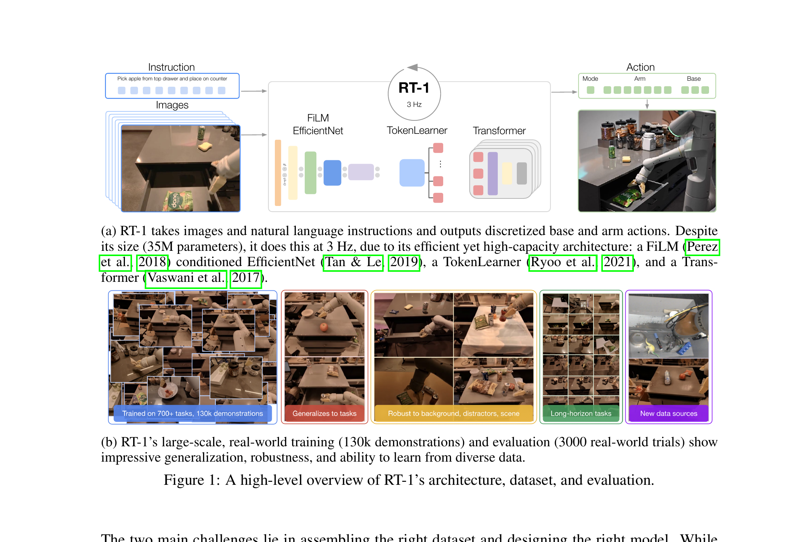

RT-1: Robotics Transformer for Real-World Control at Scale
Brohan 等 · 2022/2023 · arXiv:2212.06817 v2 · Google Robotics
RT-1 还不是 World Action Model：它不预测未来画面，只直接学习 $p(a\mid o,l)$。但它建立了 WAM 必须超越的强基线——用 13 台真实机器人、17 个月、约 13 万条轨迹和 700 多个任务，证明一个足够高效的 Transformer 可以在真实厨房以 3 Hz 做大规模多任务闭环控制。
§1 为什么 WAM 路线必须先读 RT-1
理解 WAM 之前，先要知道 reactive VLA 已经能做到什么。RT-1 的答案是：只凭当前图像、语言和最近状态，数据规模与任务多样性就能带来很强的已见任务表现和一定泛化；因此后来方法若加入未来预测，必须证明收益不是单纯来自更多数据或更大模型。
展开原文 · 论文的核心假设
“One of the keys to the success of such general robotic models lies with open-ended task-agnostic training, combined with high-capacity architectures.”
§2 真正的第一贡献：数据不是“越多越好”，而是规模与广度同时增加
上一节把 RT-1 归为 reactive policy；这并不意味着它简单。论文把数据组成当作主要研究对象：130k demonstrations、700+ tasks、13 robots、17 months，并专门比较任务数量、每任务轨迹数量和其他本体数据的作用。读 WAM 时也要保持这个习惯——先对齐数据覆盖，再讨论架构。

1. 读取短时图像与指令
视觉告诉模型环境现状，语言确定当前任务。
输入是什么：相机图像或视频，加上任务指令和机器人当前状态。它们还是原始观测，模型尚未把它们变成可用于预测或控制的特征。
这一步究竟做什么：本步骤执行“读取短时图像与指令”。具体来说，视觉告诉模型环境现状，语言确定当前任务。 这里处理的只是整条链路中的一个接口：把上一步的结果整理成下一步能够正确读取和继续计算的形式。
输出到哪里：经过本步骤处理、含义更明确的中间结果。这个结果会交给下一步“用语言调制视觉”继续处理。
为什么不能省略：它把未经处理的原始问题变成后续模块可以计算的输入，是整条链路的起点。
2. 用语言调制视觉
FiLM 让视觉特征围绕任务重排，而非事后简单拼接。
输入是什么：来自上一步“读取短时图像与指令”的产物：经过本步骤处理、含义更明确的中间结果。本步骤还会按论文设置读取当前条件、时间步或训练信号。
这一步究竟做什么：本步骤执行“用语言调制视觉”。具体来说，FiLM 让视觉特征围绕任务重排，而非事后简单拼接。 这里处理的只是整条链路中的一个接口：把上一步的结果整理成下一步能够正确读取和继续计算的形式。
输出到哪里：一组比原始输入更紧凑的内部特征；它不是最终动作或画面。这个结果会交给下一步“压缩并建模时序”继续处理。
为什么不能省略：它承担上下两步之间的接口；缺少它，前一步产生的信息无法以正确格式或正确含义传到下一步。
3. 压缩并建模时序
TokenLearner 降低 token 数量，Transformer 处理历史依赖。
输入是什么：来自上一步“用语言调制视觉”的产物：一组比原始输入更紧凑的内部特征；它不是最终动作或画面。本步骤还会按论文设置读取当前条件、时间步或训练信号。
这一步究竟做什么：本步骤执行“压缩并建模时序”。具体来说，TokenLearner 降低 token 数量，Transformer 处理历史依赖。 这里处理的只是整条链路中的一个接口：把上一步的结果整理成下一步能够正确读取和继续计算的形式。
输出到哪里：一组比原始输入更紧凑的内部特征；它不是最终动作或画面。这个结果会交给下一步“输出动作并再次观测”继续处理。
为什么不能省略：模型不能高效地直接在所有原始像素和长序列上推理；这一步把信息压成后续模块能处理、比较和复用的形式。
4. 输出动作并再次观测
动作执行后重新取图，形成 3 Hz 闭环。
输入是什么：来自上一步“压缩并建模时序”的产物：一组比原始输入更紧凑的内部特征；它不是最终动作或画面。本步骤还会按论文设置读取当前条件、时间步或训练信号。
这一步究竟做什么：本步骤执行“输出动作并再次观测”。具体来说，动作执行后重新取图，形成 3 Hz 闭环。 它把原本模糊的‘看起来对不对’拆成可重复计算或人工核对的判断，从而让不同模型能在同一标准下比较。
输出到哪里：一组诊断数值、分类结果或评测分数；它告诉后续模块当前结果哪里好、哪里需要修正。这是图中这条链路的最终产物，随后会进入真实执行、模型更新或指标评测。
为什么不能省略：没有统一诊断或评分，后续模块无法知道哪里出错，也无法公平比较两个模型是否真的进步。
§3 架构取舍：为什么不是把 ViT 做得越大越好
130k 轨迹需要容量，但机器人闭环又不允许云端模型慢慢生成。RT-1 组合 FiLM EfficientNet、TokenLearner 与 Transformer：前两者把视觉与语言压成很少的 token，后者把有限算力用于时间依赖。这个“容量—频率”约束后来在 WAM 中变得更严，因为 WAM 还要承担视频或 latent 的生成成本。
| 模块 | 解决的问题 | 若删除会怎样 |
|---|---|---|
| FiLM EfficientNet | 让语言在视觉编码阶段生效 | 目标对象和动作语义更难进入早期特征 |
| TokenLearner | 自适应选取少量空间 token | Transformer token 数和延迟快速上升 |
| Transformer | 建模图像历史与动作依赖 | 策略更接近单帧反射映射 |
| 离散动作头 | 统一多维控制为分类问题 | 需要重新处理异方差连续回归 |
§4 动作 token 化：分类损失背后的控制假设
架构只是容器，动作怎样表示决定网络实际学习的分布。RT-1 将每个动作维度量化成 256 个 bin。优点是训练稳定、可表达多峰选择；代价是精度上限由 bin 宽度决定，且各维独立分类不会显式建模关节间协方差。
- $a^j$
- 第 $j$ 个连续动作维度，例如末端位移、旋转、底盘速度或夹爪模式。
- $[a^j_{\min},a^j_{\max}]$
- 训练数据给出的动作范围；部署时超范围值会被截断。
- $q(a^j)$
- 0–255 的类别标签。网络学习分类概率，执行前再映射回连续值。
- 关键假设
- 量化误差小于控制系统可接受误差，同时分类稳定性带来的收益更大。
§5 训练目标：行为克隆很朴素，难点在采样分布
动作量化后，RT-1 的目标就是对专家动作 token 做最大似然。它没有奖励函数，也没有世界预测损失；因此一旦策略走到演示数据没覆盖的状态，只能依靠多样数据带来的鲁棒性，而不能在线修正模型偏差。
- $o_{t-H:t}$
- 当前到过去 $H$ 帧的视觉历史。
- $l$
- 自然语言任务指令，通过 FiLM 进入视觉编码。
- $D$
- 离散化后的动作维度数。
- 没有出现的量
- 没有 $o_{t+1}$ 预测、环境奖励或 value function；这正是它和 WAM/RL 的结构边界。
§6 实验怎样读：3000 次真机试验比单个成功率更重要
论文在 700 多个训练指令上报告约 97% 成功率，但更关键的是把泛化拆成新任务、背景/干扰物、长程任务和新数据来源，并进行约 3000 次真实机器人评估。这说明 RT-1 的主张是“规模化多任务策略”，而不是某个单任务 SOTA。
| 问题 | 证据 | 应怎样解释 |
|---|---|---|
| 训练任务是否学会 | 700+ 指令上约 97% 成功 | 证明容量足够，但不等于分布外泛化 |
| 新任务能否组合 | 对未训练组合单独评测 | 受训练技能连接性影响，而非纯语言推理 |
| 视觉扰动是否稳健 | 背景、干扰物和场景变化 | 多样数据比单一增广更重要 |
| 长程是否可执行 | SayCan 将 RT-1 作为低层技能 | 长程来自高层选择器 + 可靠技能，不是 RT-1 自己规划 50 步 |
§7 消融告诉了什么：任务广度不能被同等数量的重复轨迹替代
仅看大模型成功率无法判断增益来自架构还是数据。论文的关键消融比较“减少任务种类”和“每个任务减少轨迹”：前者对新任务泛化伤害尤其明显。这提示后续 WAM 用互联网视频预训练时，价值可能首先来自运动与场景的广度，而不是同一种动作的重复次数。
先固定模型与总轨迹数，改变任务多样性；再固定任务集合，改变每任务轨迹数；最后加入仿真或其他机器人数据，检查原任务是否遗忘以及新场景是否真正提升。
§8 边界与后续：RT-1、RT-2 与 WAM 到底差在哪
RT-1 证明大规模行为克隆可以形成通用真实机器人策略；RT-2 再把网页视觉语言知识接入动作 token；WAM 则继续补上它们都没有被强制学习的变量——未来世界状态。三者不是简单的新旧替代，而是逐层增加监督：动作、语义知识、动作后果。
| 方法 | 训练分布 | 输出 | 主要盲点 |
|---|---|---|---|
| RT-1 | 真实机器人轨迹 | 离散低层动作 | 无网页知识、无未来预测 |
| RT-2 | 机器人 + Web VLM 数据 | 语言/动作 token | 语义强，但不显式学习动作后果 |
| WAM | 机器人 + 视频/多模态数据 | 未来状态与动作 | 生成成本、因果一致性和闭环延迟 |
展开原文 · 论文对模型与数据的总结
“Good generalization requires datasets that combine both scale and breadth, covering a variety of tasks and settings.”